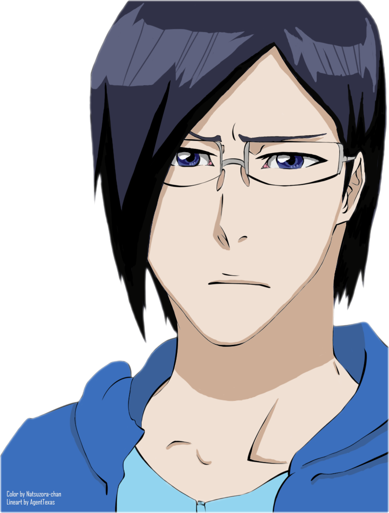
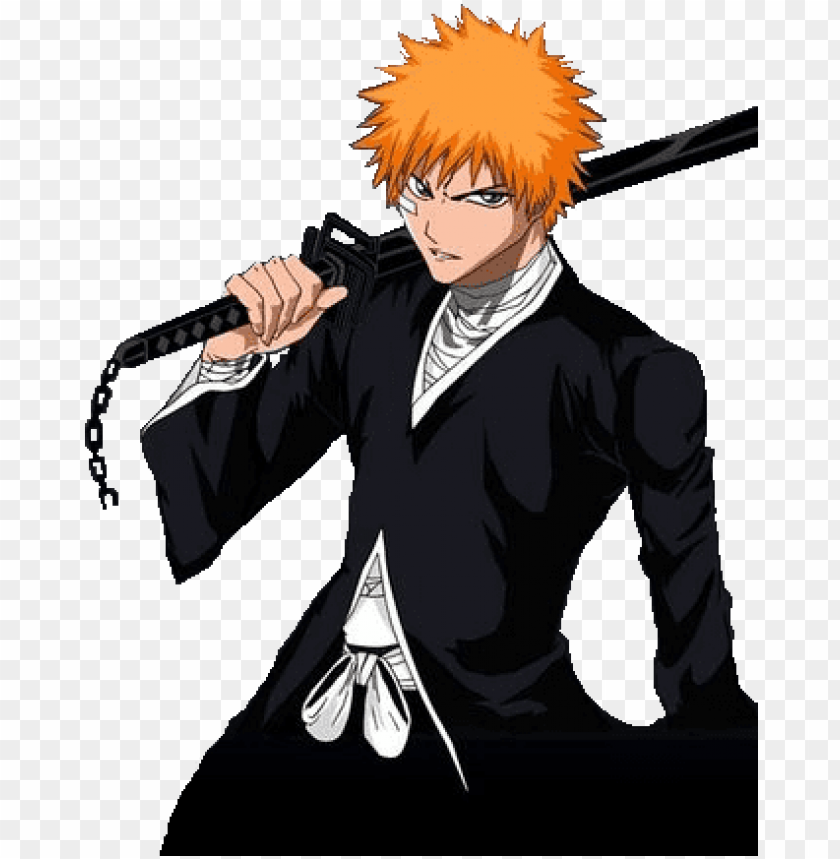
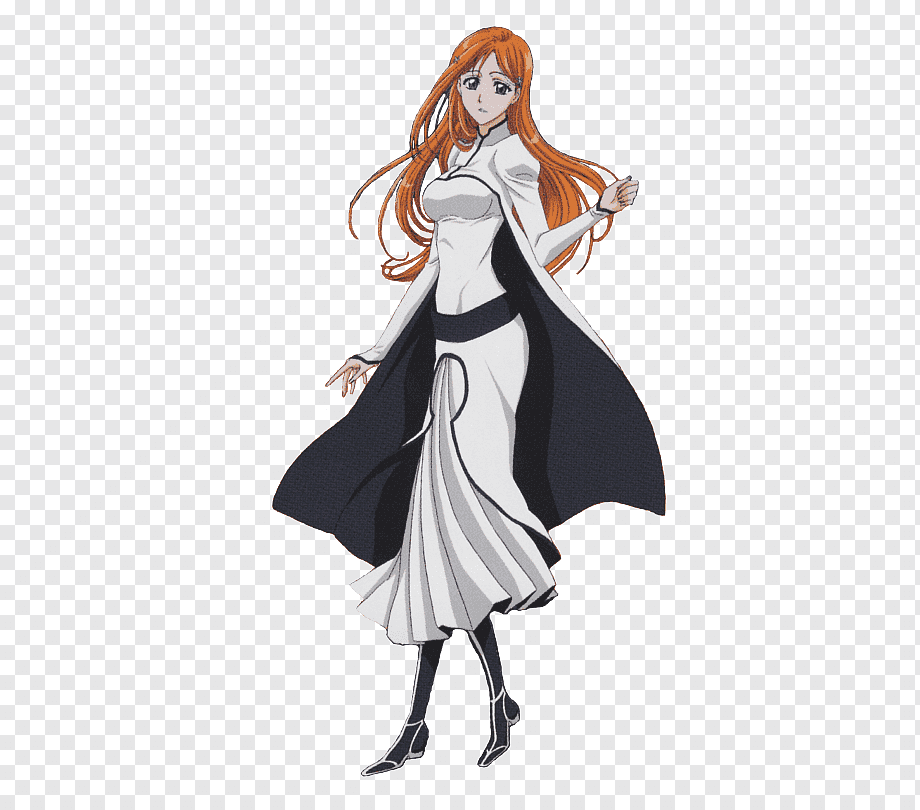

Formulário sobre animes
Sobre Bleach
Em que ano foi lançado o anime Bleach?
1998
1999
2004
Qual o nome do protagonista do anime?
Ishida Uryuu
Kurosaki Ichigo
Inoue Orihime
Aizen Sousuke
Quantos irmãos o protagonista possui?
1
2
4
0
No anime/mangá existem 3 mundos, eles são:
Soul Society, Mundo dos vivos e Hueco mundo
Soul Society, Konoha e Montanha pauz
Hueco mundo, planeta do sr. Kaioh e inferno
Na obra, quando almas são corrompidas elas se tornam almas malignas. Essas almas se chamam:
Shinigamis
Hollows
Quincies
Enviar
Resetar